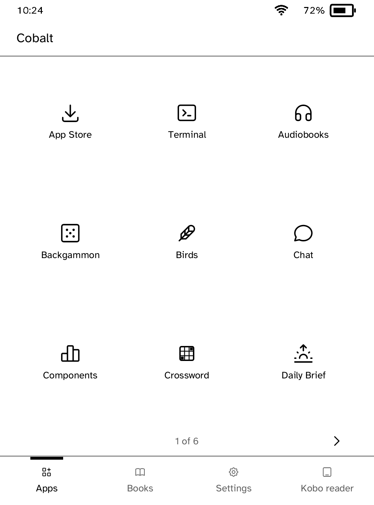
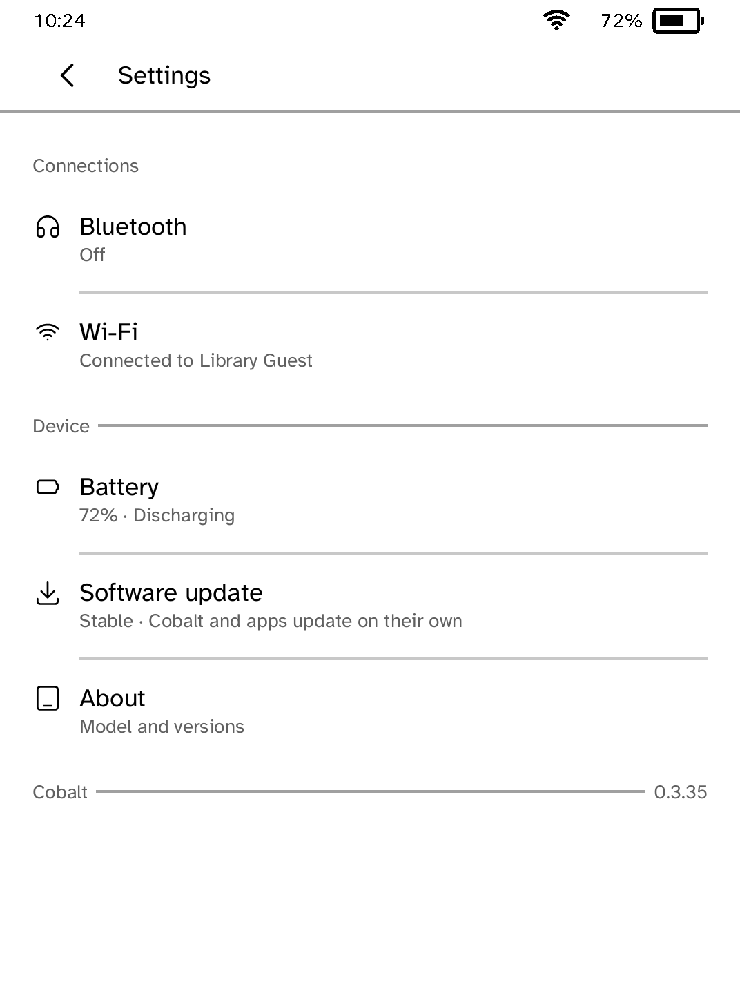

Launcher
Opens installed apps and always keeps a route back to the Kobo reader.
- Comes with
- Cobalt, with nothing separate to install



Want another Kobo app? Request it, suggest a feature or report a bug in r/CobaltForKobo.